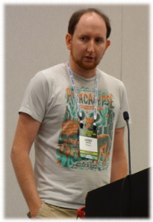

Exposing extent information to user space
In a short, filesystem-only session at the 2016 Linux Storage, Filesystem, and Memory-Management Summit, Josef Bacik led a discussion on exposing information on extents, which are contiguous ranges of blocks allocated for a file (or files) by the filesystem, to user space. That could be done either by extending the FIEMAP ioctl() command or by coming up with a new interface. Bacik said that he was standing in for Mark Fasheh, who was unable to attend the session.

FIEMAP just reports whether an extent is shared or not, but there are some applications that want to know which inodes are sharing the extents. There are reserved 64-bit fields in struct fiemap_extent that could be used to report the inode numbers, Bacik said. He asked if that seemed like a reasonable approach.
Ric Wheeler wondered if there was really a need for applications to unwind all of this information. He asked: "Is there a backup application that will use this?" Jeff Mahoney responded that there is someone requesting the functionality.
Darrick Wong said that as part of his reverse mapping and reflink() work for XFS he has an interface that will allow applications to retrieve that kind of information. You can pass a range of physical block numbers to the reverse-map ioctl() and get back a list of objects (e.g. inodes) that think they own those blocks, he said.
Bacik said that sounded like the right interface: "Let's use that." Wong said that he would post some patches once he returned home from the summit.
| Index entries for this article | |
|---|---|
| Kernel | Filesystems |
| Conference | Storage, Filesystem, and Memory-Management Summit/2016 |